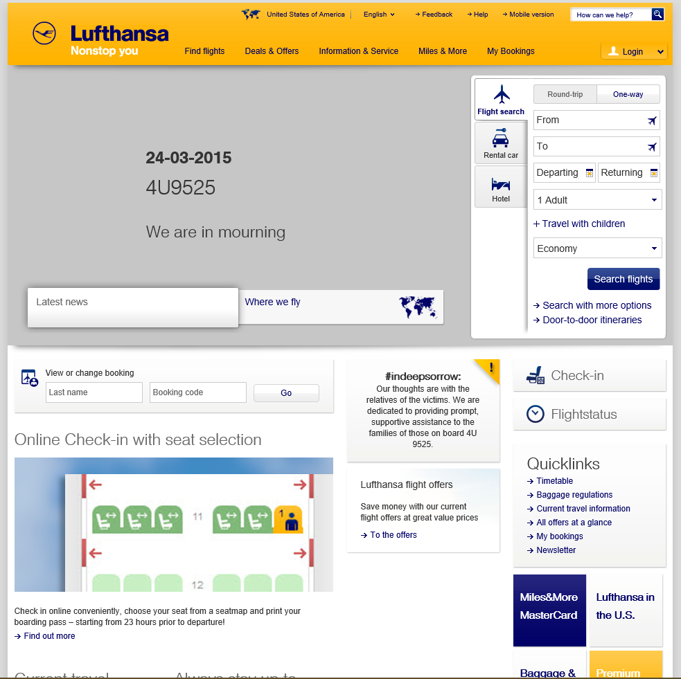

Lufthansa
Overview & Structure
On the main page, you have three options in the right hand corner of the page titled: flight search, rental car, and hotel. Once you click on the flight search option, you are then given another option on whether or not you are looking for one way flights or round-trip flights. Then when you click on either round-trip or one way, you are able to key in where your departing from and to what destination, along with if you will be traveling with children, how many adults, and which economy it will be. By economy, you can pick whether it will be a business class, premium economy, or just economy.Positive Features
Specific Search Options
Gives options to consumers that are unavailable on other sites, like specific child tickets and searching for multi-city or award flights specificallyRoute Map
Includes an interactive routing map so consumers can search for destinations of certain airportsFirst Class Simplicity
A link to the information of first class benefits is located to the left of the booking select for the ease of consumers that want to know differences before searching.Information Hierarchy
Places all necessary information into categories that are in the main navigation bar. This navigation bar is interactive and folds out for easy access.Features to Work on
Rewards Information
Information of the rewards system is placed through a third party and difficult to navigate. Information is misspelled and hard to understand.Navigation Bar Design
Navigation bar hurts the eyes and the text is too small and close together. Too text heavy to be effective.
Button and Search Location and Design
Check-in, flight status, and editing bookings are located at the bottom of the page above the fold. These options are all a very light gray, which is difficult to see over the white background.